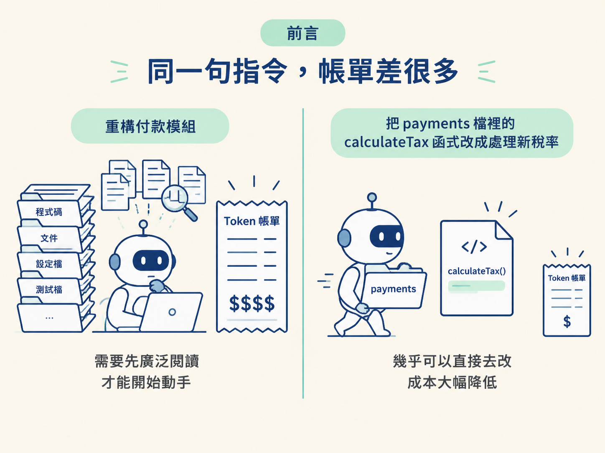
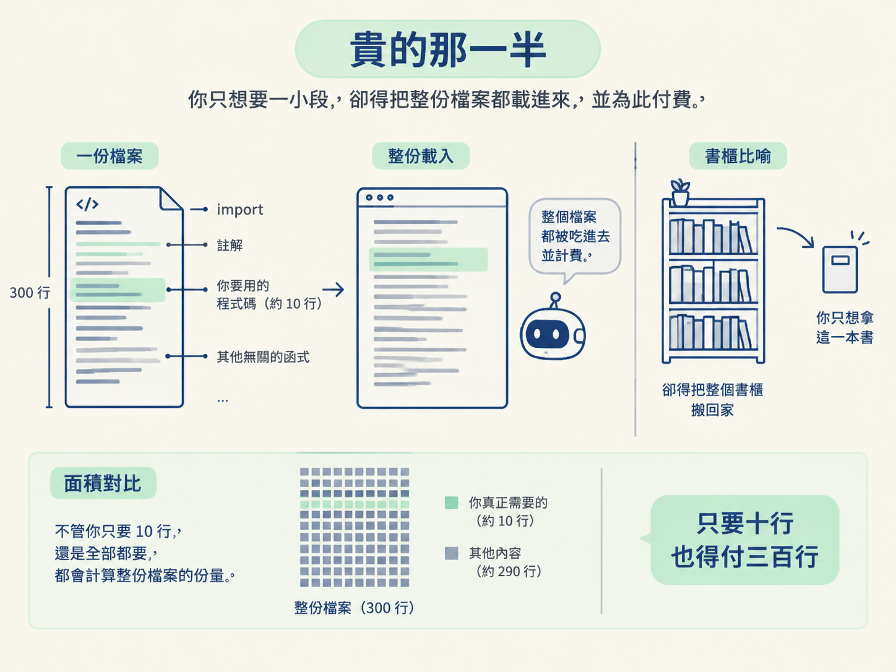
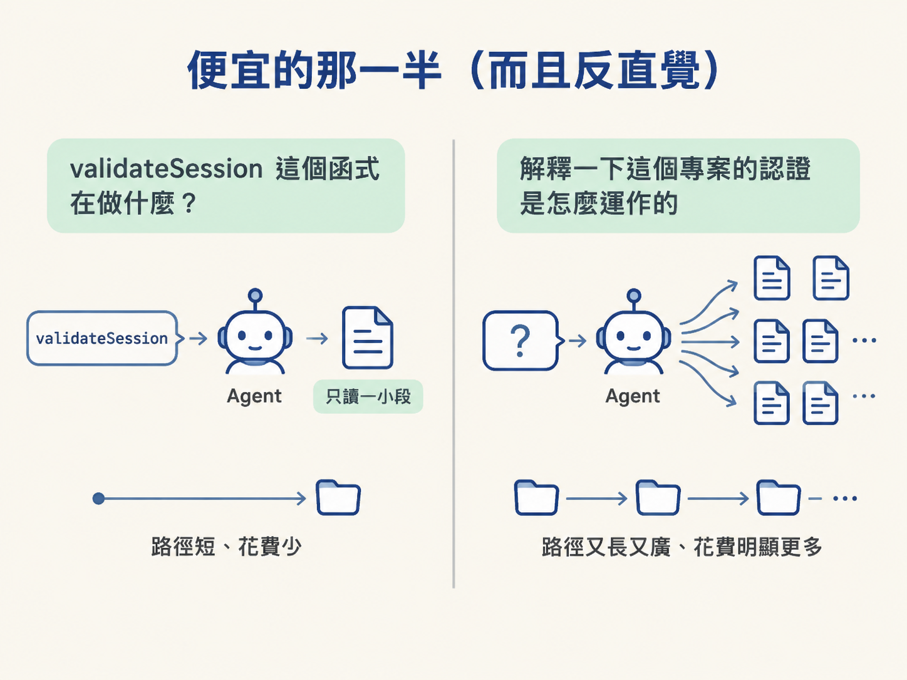
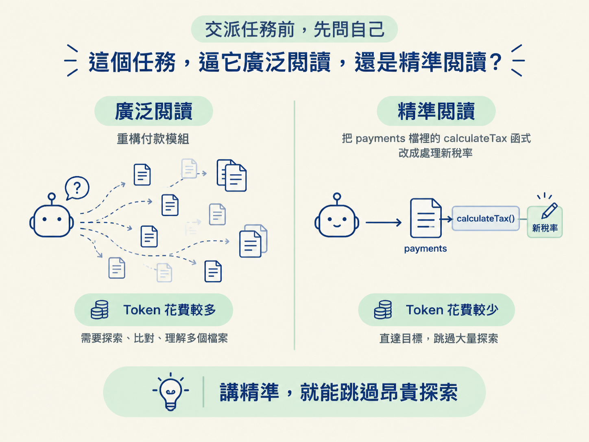

能分辨 context 裡哪些活動很貴、哪些很便宜，並用「這個任務逼它廣泛閱讀還是精準閱讀」在事前就判斷成本。
到這裡，你已經走完前面那一段路。你看過 window 怎麼被一點一滴填滿，看過它在滿之前就先掉品質，也看過它怎麼被無關的主題帶偏；你知道什麼時候該 clear，什麼時候該 compact。
但有一件事一直沒有被明說，它卻悄悄穿過前面每一個決定：不是所有進到 window 的東西，成本都一樣。
想像你對著同一個 agent 說兩句話。第一句是「重構付款模組」。第二句是「把 payments 檔裡的 calculateTax 函式改成處理新稅率」。聽起來只是第二句講得比較細而已，實際上差很多：第一句會逼它在動手之前先讀一大堆東西，第二句它幾乎可以直接去改。兩者的成本可以差上好幾倍。

這一節的任務，就是把「為什麼會差這麼多」講成一套你帶得走的直覺。
agent 讀的、寫的、推理過的一切，都用 token 來計算。token 是很小的文字塊，大約一到兩個字元的長度。你不需要精確去數它，你需要的是知道哪些活動會燒掉很多、哪些幾乎不佔空間。
而在所有關於 token 的知識裡，最該記住的是這一句：
Reading is expensive, reasoning is cheap. 讀，很貴；想，很便宜。
這句話幾乎解釋了你的 context 預算都花到哪裡去。把它寫下來、記牢，因為接下來八成的判斷都是從它推出來的。
先從最貴的開始：讀檔案。這是最大的一筆開銷。
每一個被 agent 打開的檔案，都是整份載入。你真正需要的可能只是其中一個函式，但它會把整個檔案吃進去：每個 import、每行註解，還有夾在你要的那段程式碼上下、其實毫不相關的那些函式。一個三百行的檔案，就要花掉大約三百行份量的 token，不管你只要其中的十行，還是全部都要。就像你只想拿架子上的一本書，卻得把整個書櫃搬回家。

第二貴的是搜尋結果。每一筆 grep 的命中、每一個 glob 回傳的檔案路徑、周圍的上下文、行號，全部都會落進 window。在一個大程式庫裡做一次廣泛搜尋，可能回傳幾十筆命中，而這些全部都要付費，包括那些後來證實毫無關係的。
第三貴的是冗長的對話歷史。session 裡的每一輪都會一直留在 window 裡，直到被 clear 或 compact 掉。所以一段有六十來回訊息的對話，揹著的是全部六十回的 token 成本，不只是最近那幾回。這也正好解釋了前面為什麼那麼強調 session 衛生。
第四貴的是冗長的輸出。agent 如果長篇大論地解釋自己的推理，或者回傳一大塊生成好的程式碼，那些 token 是花在「回應本身」上，不只花在它為了得到答案而讀的東西。
反過來說，有些看起來很費腦的事，其實便宜得很。
首先是短而精準的推理，也就是工具呼叫之間那一瞬間的判斷：下一個該開哪個檔、這個結果對不對。這種思考跟餵給它的那些閱讀比起來，成本低得可憐。
不過這裡要補一個重要的範圍說明：上面講的是迴圈裡那些例行的、即時的小判斷，不是說所有推理都免費。如果面對的是一個真的困難的問題、開了 extended thinking，或是在推敲一個複雜的設計取捨，那是可以合理地花掉真金白銀的 token。那樣的推理花得多，但往往也更有價值。這條規則講的是日常的判斷，不是深度解題。
第二便宜的是精準的問題。問「validateSession 這個函式在做什麼？」的成本，遠低於問「解釋一下這個專案的認證是怎麼運作的」。為什麼？因為那個模糊的版本會逼它做更廣的搜尋、開更多檔案，才有辦法試著回答你。

第三便宜的是小範圍、聚焦的檔案讀取。打開一個二十行的工具函式，成本只是「打開一個四百行的檔案，只為了從裡面挖出同一個函式」的一小部分。
| 貴（閱讀為主） | 便宜（推理與精準為主） |
|---|---|
| 讀檔案（整個檔載入，300 行就是 300 行） | 短、精準的迴圈內推理 |
| 搜尋結果（每次命中、路徑、上下文都付費） | 精準、範圍明確的問題 |
| 冗長的對話歷史（60 則就揹全部 60 則） | 小而聚焦的檔案讀取（20 行 vs 400 行） |
| 冗長的輸出（長篇解釋、大塊程式碼） | （難題的深度推理，雖然貴但值得） |
現在回頭看前面幾課，你會發現它們都多了 token 上的解釋。
還記得上一節講的命名與結構嗎？現在你可以清楚看見它為什麼在 token 上這麼值錢。壞的命名意味著更多搜尋、更多猜測、更多「開了好幾個檔才落到對的那個」。而這些多出來的每一步，通通是貴的閱讀。如果結構從一開始就清楚，這一切根本不必發生。所以那些老掉牙的工程基本功，在今天不但沒有過時，反而比以前更重要。
再回頭看 clear 與 compact 的抉擇，你也多了一個更銳利的判準。如果一個 session 已經把大量 token 燒在對接下來不再相關的廣泛探索上，那麼把它清掉幾乎不花你什麼力氣（重講那幾件關鍵事實的成本很低），卻能讓你不必揹著那一大坨死重往前走。這就是「該 clear 的時候就 clear」在帳面上的理由。
你不需要精確追蹤 token 數。你只需要養成一個習慣：
在把任務交出去之前，問自己一句：這個任務，逼它廣泛閱讀，還是精準閱讀？
「重構付款模組」是廣泛的。它得先去讀一大堆東西，才有辦法動手。
而「把 payments 檔裡的 calculateTax 函式改成處理新稅率」是精準的。它確切知道該去哪、該動什麼。這第二個版本不只是對 agent 來說更清楚，還便宜得多，因為它跳過了幾乎所有昂貴的探索。

這第二種做法，聽起來只是一句「把要求講精準」的指令，但接下來要教你的 agentic engineering workflow 做的正是這件事，只不過規模大得多：把 agent 會用到的正確資訊事先準備好給它，讓它能直接動手，而不必從零開始摸索。
你也不必只憑感覺。Claude Code 有一個真實的指令 /context，可以即時顯示目前這個 session 的 token 究竟花到哪裡去、還剩下多少空間。在一個真實的 session 跑到一半時執行它，你就會看到這一節講的「貴與便宜」變成眼前一組具體的數字，而不只是一句原則。
不是所有進到 window 的東西成本都一樣。核心原則只有一句：讀很貴、想很便宜。貴的是讀檔案（整份載入）、搜尋結果、冗長的對話歷史、冗長的輸出；便宜的是短而精準的推理、精準的問題、小範圍的讀取。這解釋了為什麼命名與結構值錢，也讓 clear/compact 的決定更有依據。你要養成的唯一習慣：交派任務前，先問它逼的是廣泛閱讀還是精準閱讀。
到這裡，這個模組的整組機制你都掌握了：迴圈怎麼跑、agent 實際看到什麼、它怎麼搜尋、window 為什麼會滿、變差時會怎樣、怎麼重置，以及一路上什麼最貴。這一整套東西會一路接到後面的 agentic engineering workflow，你之所以要事先把資訊準備好，理由就是這裡。接下來就不是理論了：下一課會給你一個真的走偏的 session，你的任務是把它讀一遍，找出它究竟是從哪裡開始出錯的。